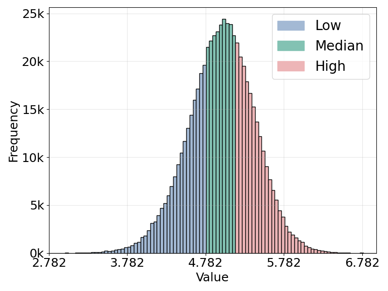
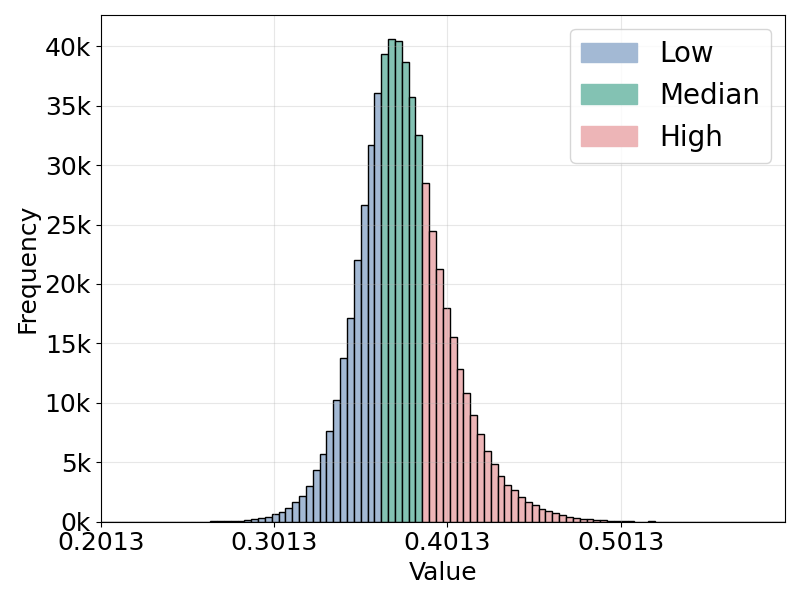
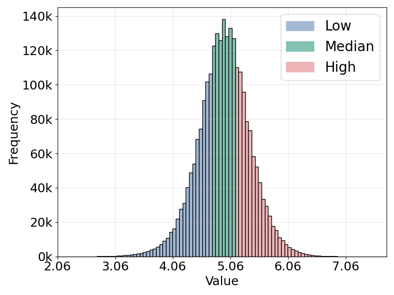
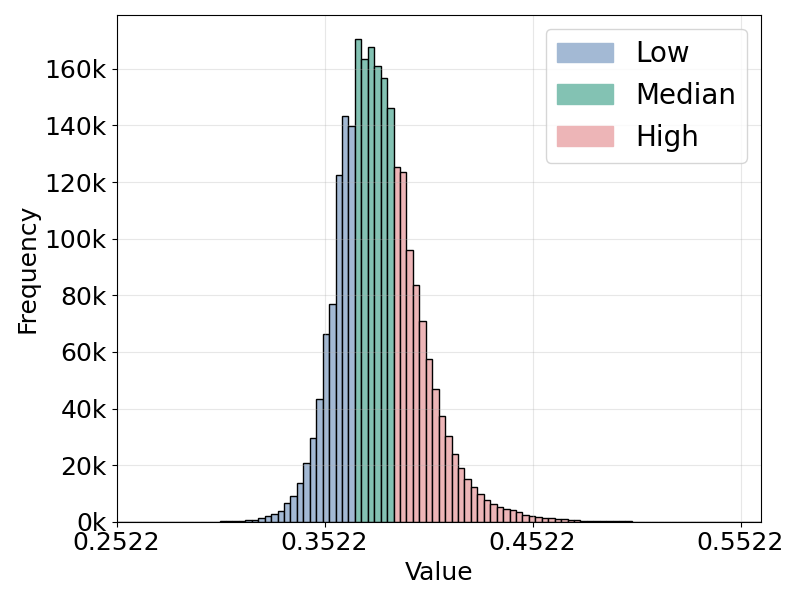

The same table, as a search engine: type a query, pick an aesthetic and a relevance level, and watch the completion and the retrieved image change.
Text-to-image retrieval is a fundamental task in vision-language learning, yet in real-world scenarios it is often challenged by short and underspecified user queries. Such queries are typically only one or two words long, rendering them semantically ambiguous, prone to collisions across diverse visual interpretations, and lacking explicit control over the quality of retrieved images. To address these issues, we propose a new paradigm of quality-controllable retrieval, which enriches short queries with contextual details while incorporating explicit notions of image quality. Our key idea is to leverage a generative language model as a query completion function, extending underspecified queries into descriptive forms that capture fine-grained visual attributes such as pose, scene, and aesthetics. We introduce a general framework that conditions query completion on discretized quality levels, derived from relevance and aesthetic scoring models, so that query enrichment is not only semantically meaningful but also quality-aware. The resulting system provides three key advantages: 1) flexibility, it is compatible with any pretrained vision-language model (VLMs) without modification; 2) transparency, enriched queries are explicitly interpretable by users; and 3) controllability, enabling retrieval results to be steered toward user-preferred quality levels. Extensive experiments demonstrate that our proposed approach significantly improves retrieval results and provides effective quality control, bridging the gap between the expressive capacity of modern VLMs and the underspecified nature of short user queries.
The user types something underspecified, such as “a train”. On its own it pins down the subject but says nothing about composition, setting or style.
A language model continues the prefix conditioned on the requested aesthetic and relevance levels, turning the control into words.
The completed query is embedded and matched against the image index. The retriever is frozen — all of the control lives in the text.
Each control level is a band of the score distribution over the corpus: images are ranked by aesthetic score and by image–text similarity, and the two distributions are split into Low, Medium and High regions that the completions are trained to target.

Aesthetic score — MS-COCO

Image–text similarity — MS-COCO

Aesthetic score — Flickr2.4M

Image–text similarity — Flickr2.4M
Every row is one query prefix. Left to right, the requested quality goes up; the completion, the retrieved image and both scores change with it. Aes is the aesthetic score, Rel the image–text similarity.
The same table, as a search engine: type a query, pick an aesthetic and a relevance level, and watch the completion and the retrieved image change.
@inproceedings{lu2026seeing,
title = {Seeing Through Words: Controlling Visual Retrieval Quality with Language Models},
author = {Lu, Jianglin and Jenni, Simon and Kafle, Kushal and Shi, Jing and Zhao, Handong and Fu, Yun},
booktitle = {International Conference on Learning Representations (ICLR)},
year = {2026}
}